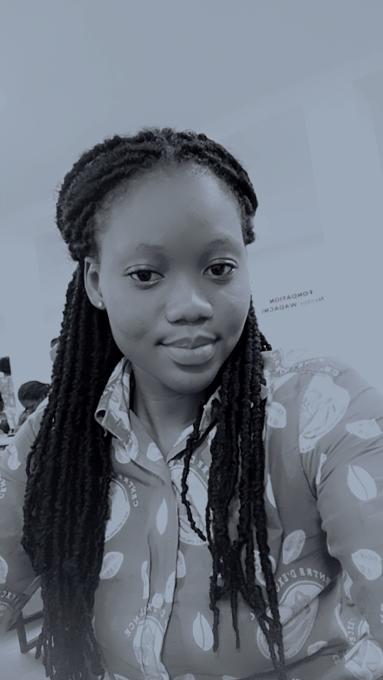

UNIVERSITE D'ABOMEY CALAVI
ECOLE NATIONALE D'ECONOMIE APPLIQUEE ET DE MANAGEMENT

I-CURSUS
I-Maternel
Maternel1 et 2:ECOLE CATHOLIQUE SAINT ANTOINE DE PADOUE
II-PRIMAIRE
CI au CM2:ECOLE CATHOLIQUE SAINT ANTOINE DE PADOUE
III-SECONDAIRE
_Premier cycle:CEG MALE
_Second cycle:CEG DANTO
II-DESCRIPTION
Je m'appelle océane BOKO
Je suis en licence 1 d'informatique de gestion à l'ENEAM
j'aime les jeux et j'aime également écouter la musique
Je vivais à Porto-Novo avec mes parents mais depuis Novembre 2024
je suis chez mon oncle ici à Cotonou
j'ai une famille constituée de six membres donc j'ai deux frères et une soeur
j'aime ma famille
je veux réussir